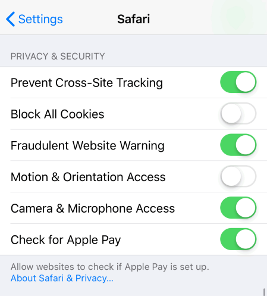

Your device might not support using the accelerometer. Most smartphones support this, although iOS devices running version 12.2 or later might have to turn on Motion & Orientation Access, in Settings > Safari.
